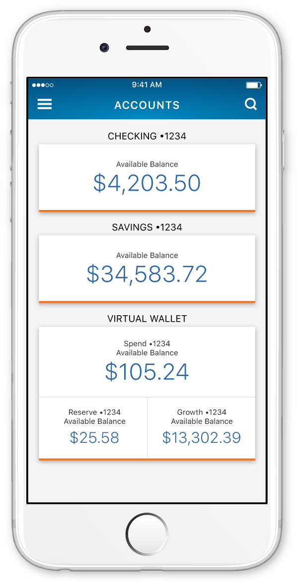
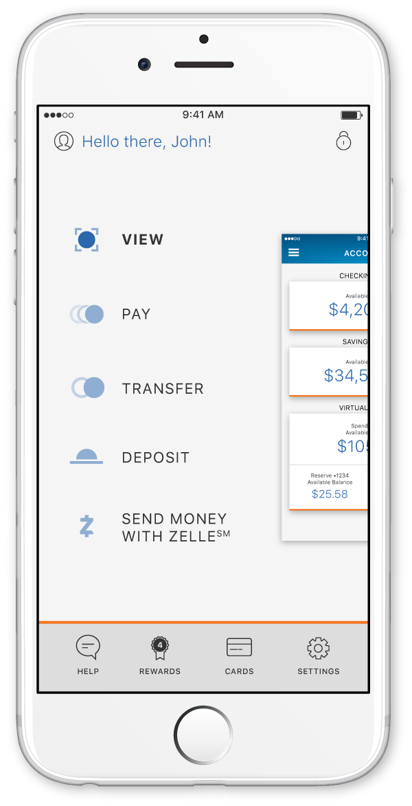
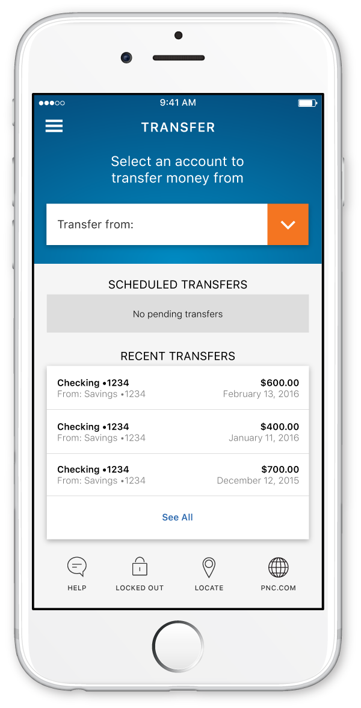
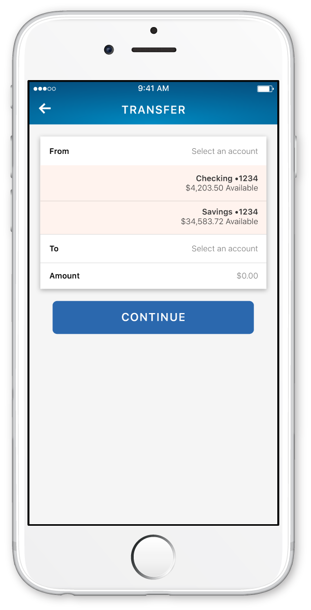
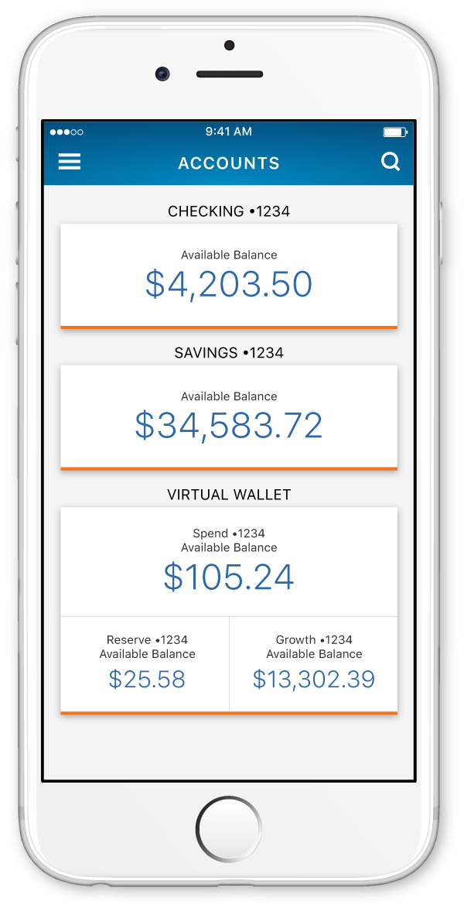
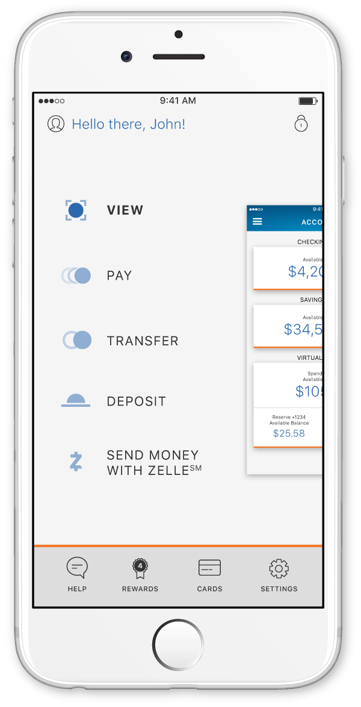
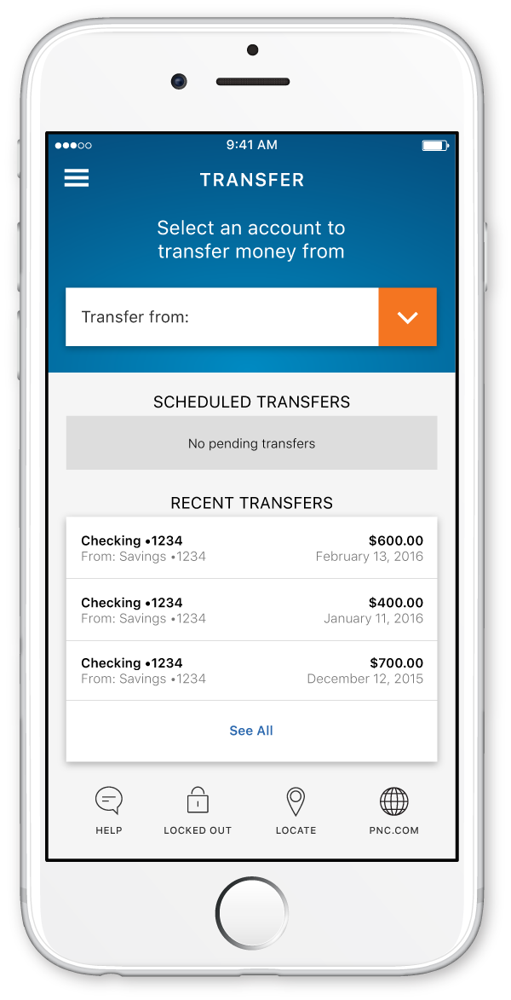
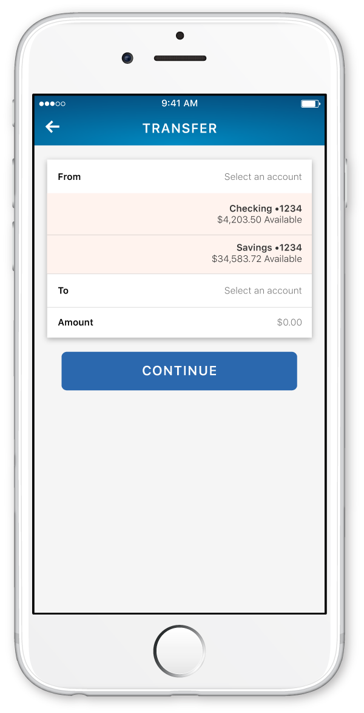

Input password for access to the PNC Mobile section.
I am currently working for PNC as a senior experience designer on the PNC Mobile team.
Right now I'm focused on how animations bring an experience to life and developing PNC's Style Guide.
The PNC App
While at PNC, I've been working on the mobile app as my main priority. The main goals that I established were to keep the app accessible, make it intuitive to navigate, and give the user a sense of security while using the app.
You can download the iOS app here and the Android app here.
Initial Ideas
Luckily for me, I joined the PNC Mobile team when the design for the app was still in its infant state. I was able to start fresh and design the app fully from the ground up. Initially I had wanted the designs to be colorful, friendly, and interesting to interact with. This gave way to a 3D space concept that the current designs still carry.
The app was designed to let the user plunge into a space "behind" the screen. Tiles of relevant information would weave in and out of the scope of the screen and let the user navigate through space in that way. This manifested in a lot of motion research and design. The goal was to make an intuitive experience for users, and let them be able to track where tiles were moving.
Because there are so many things that a user can do with money, we tried to organize the app into things that the user would want to do rather than list the features in a side menu. Our navigation drawer became four individual tasks: view your money and transactions, pay someone, transfer money between accounts, and deposit money into your accounts. Using these four sections, we were able to organize features under them for a simpler, easier experience. Each bucket would have a different color accent, so the user would intuitively know which section of the app that they were in.
Color and Contrast
We soon realized that the colors that I had chosen weren't accessible for visually impaired users. In my excitement at making a new design language, I had completely forgotten to account for them. Most of my colors and type sizes didn't meet WCAG 2.0 compliance. We ended up having to throw out almost all of the colors I had chosen in favor of higher contrast designs. In their place, dark oranges and blues were used as indicators of where users could go.
 







Improvements for the Future
The way that the animations behave within the app are significantly different than what I had originally mocked up. I am trying to figure out a better way of explaining to our developers how I want certain things to behave; motioning with hand gestures and sound effects only takes a person so far.
Craft of the actual code is a little bit off as well. Because I had to design using percentages, certain elements are slightly off from what I had mocked up resulting in a slightly different feel when using the app. Certain drop shadows aren't represented the way that I had anticipated as well. There are a significant number of small changes that I would like to make, but must move past to constantly pump out new features.
Lunar Gala | Vestige
Lunar Gala is a student-run fashion that is hosted annually by Carnegie Mellon University. I worked with Nio Ono, Zai Aliyu and Daniel Kim as designers and Salem Hilal as developer.
Developing the concept
Initial brainstorming was all about the relationship between the fashion show as an entity and the audience as a participant. We wanted to play with the idea that the show was an experience that people would come to in order to be cleansed from the struggles of school and daily life.


Animation Placeholder
Ballroom Placeholder
Education
Carnegie Mellon University | May 2015
▸ Bachelor in Fine Arts | Communication Design
▸ Minor in Photography
Experience
PNC Bank | Digital Experience Designer | June 2015 - Ongoing
▸ Redesigned the mass market mobile app
▸ Brought Apple app store rating from 1.9 stars to 4.8 stars
▸ Currently developing and maintaining PNC Mobile Style Guide
Automoblox | Web Designer | Summer 2014
▸ Redesigned Automoblox's website
Bearded | Web Design Intern | Summer 2013
▸ Maintained woodtyperevival.org using Ruby on Rails
▸ Produced posters using a letterpress
Skills
Adobe Creative Suite
▸ Ai, Ps, Dw, Id, Ae, Au
Rapid Prototyping
▸ Sketch, Invision, Framer
Web Development
▸ HTML, CSS, Javascript, JQuery
Programming
▸ Python, Ruby
Photography
▸ Portraits, Products, Weddings